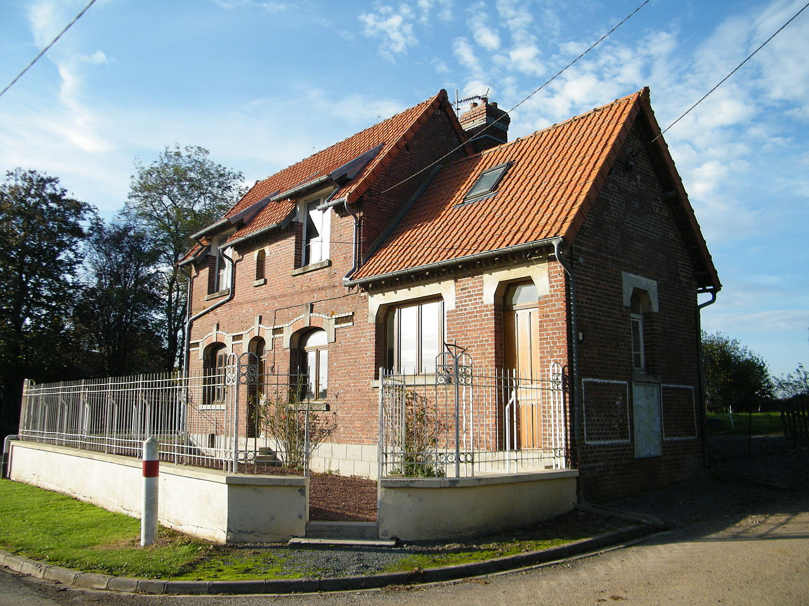
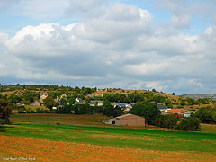
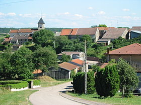
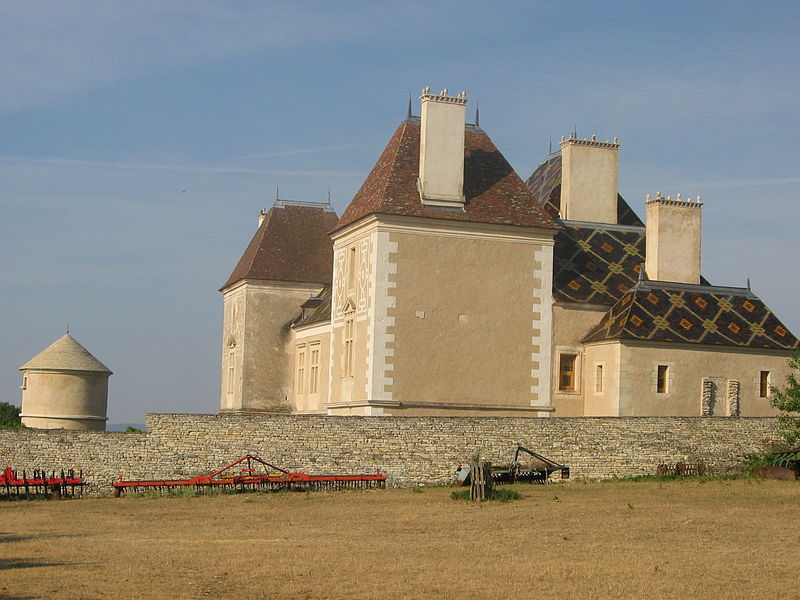
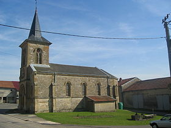
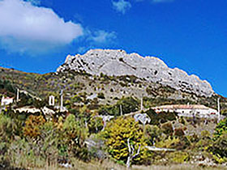

C'est à une plongée binaire, mais riche en enseignements, que nous invitent les données publiées fin octobre par l'Insee, qui détaillent pour chacune des 36 664 communes françaises le nombre de naissances et de décès enregistrés sur une année (2011). S'ils ne permettent d'appréhender ni les mouvements de population à l'intérieur du territoire, ni l'émigration et l'immigration, ces chiffres nous éclairent sur le dynamisme ou la morosité démographique des différentes régions de la première puissance démographique de l'Union européenne.
La « diagonale du vide » démographique existe bien
L'Ouest, la région parisienne, le Nord et le Lyonnais apparaissent comme les zones du territoire métropolitain où l'on naît le plus, par rapport à la moyenne. Si l'on met de côté des cas particuliers comme Calvi (Haute-Corse) ou Novel (Haute-Savoie), qui bénéficient d'un biais méthodologique (voir plus bas), le pic métropolitain est atteint en banlieue parisienne, où une zone à cheval entre la Seine-Saint-Denis, la Seine-et-Marne et le Val-de-Marne affiche un taux exceptionnel de 17,3 naissances pour 1 000 habitants. Juste derrière, la zone située autour de Guer, en Ille-et-Vilaine (Bretagne), a vu naître en moyenne 17 enfants pour 1 000 habitants en 2011. La Guyane explose ces records, avec 26,3 ‰.
En grand déficit de naissances, la traditionnelle « diagonale du vide » reliant la Champagne-Ardenne au Pays Basque présente également une étonnante sur-proportion de décès. Une poignée de communes de Corrèze entre Bugeat et Périssac détiennent le triste record de 147 décès pour 5 459 habitants, soit près de 27 ‰. Dans le même temps, seuls 28 enfants naissaient dans cette zone en 2011.
On remarque aussi que les côtes sont, conformément aux idées reçues, des lieux « privilégiés » pour mourir – car prisés des seniors. De Collioure (Pyrénées-Orientales) à Saint-Raphaël (Var) en passant par Biarritz (Pyrénées-Atlantiques), le taux de décès dépasse largement la moyenne nationale.
Naissances (2011)
Décès (2011)
Comment ces cartes ont été construites
Les limites administratives que constituent les communes, les départements ou les régions ne sont pas idéales pour représenter la réalité géographique d'un territoire, car elles ne sont pas de taille uniforme. Nous avons donc utilisé la méthode du "maillage hexagonal" pour diviser la France métropolitaine en 1 238 hexagones de tailles égales, qui contiennent, selon leur taille, entre 1 et 92 communes. Ces hexagones sont ensuite colorés en fonction des taux de natalité et de mortalité moyens des communes qui la composent. La coloration des taux les plus élevés a été accentuée pour les faire ressortir sur la carte.
Seule exception à cette règle : les communes d'outre-mer ont été regroupées en fonction de leur département de rattachement (Guadeloupe, Martinique, Guyane, La Réunion). Les données concernant Mayotte et les autres collectivités d'outre-mer françaises n'étaient pas fournies par l'Insee.
Pour les naissances, l'Insee prend en compte le domicile de la mère de l'enfant. Pour les décès, le domicile du défunt.
Les communes situées à l'extrêmité du territoire, comme Calvi en Haute-Corse ou Bessans en Savoie, sont les victimes collatérales de cette méthode. La moyenne calculée n'a guère de sens, car elles constituent l'unique commune de leur hexagone.
Les tendances démographiques repérées sur les cartes ci-dessus se retrouvent peu ou prou quand on change de méthode, en agrégeant les communes par département. Sur le graphique de gauche, on retrouve parmi les champions de la natalité la banlieue parisienne et l'ouest, tandis que le Lot, le Gers et les deux départements corses descendent bien en-deça de la moyenne. Sur celui de droite, la Creuse et la Corse-Sud affichent plus de 14 décès pour 1 000 habitants.
En comparant les deux graphiques, on constate que les communes où l'on naît le moins sont aussi souvent celles où l'on meurt le plus – et inversement.
Les communes où l'on naît le plus
En descendant encore d'un niveau, on peut s'intéresser individuellement à chaque commune. Immédiatement, un biais surgit : les taux de natalité les plus élevés se retrouvent mécaniquement dans les communes les moins peuplées, où une naissance supplémentaire peut faire bondir la moyenne. A Armancourt (Somme), par exemple, on a connu en 2011 trois naissances... pour 19 habitants au total, soit une moyenne de 158 naissances pour 1 000 habitants, douze fois supérieure à celle de Paris (13,4 ‰).
Armancourt
(Somme)

158 naissances ‰
(3 naissances pour 19 habitants en 2011)
Rouvroy-Ripont (Marne)
143 naissances ‰
(1 naissance pour 7 habitants en 2011)
Verrières-du-Grosbois (Doubs)
125 naissances ‰
(3 naissances pour 24 habitants en 2011)
Causse Bégon
(Marne)

100 naissances ‰
(1 naissances pour 10 habitants en 2011)
Germisay
(Haute-Marne)
100 naissances ‰
(2 naissances pour 20 habitants en 2011)
Remoncourt
(Meurthe-et-Moselle)
100 naissances ‰
(4 naissances pour 40 habitants en 2011)
A l'inverse, les petites communes sont aussi celles où l'on retrouve la natalité la plus basse, du fait du grand nombre de moyennes nulles : les 4 005 communes françaises (sur 36 664) qui n'ont connu aucune naissance en 2011 comptent toutes moins de 1 000 habitants. La plus peuplée d'entre elles, Saint-Martin-en-Bière (Seine-et-Marne), compte 797 âmes.
Mécaniquement, ce phénomène fait baisser la moyenne du taux de natalité dans les petites communes par rapport aux grandes villes (voir ci-contre).

Les communes où l'on meurt le plus
Le même phénomène se retrouve au niveau du taux de mortalité, qui atteint son pic à Saint-Genest, dans les Vosges, avec 19 décès dans une commune qui compte 126 habitants.
Saint-Genest
(Vosges)

151 décès ‰
(19 décès pour 126 habitants en 2011)
Jouancy
(Yonne)

148 décès ‰
(4 décès pour 27 habitants en 2011)
Rouvroy-Ripont (Marne)
143 décès ‰
(1 décès pour 7 habitants en 2011)
Cunel
(Meuse)

143 décès ‰
(2 décès pour 14 habitants en 2011)
Izon-la-Bruisse (Drôme)

125 décès ‰
(1 décès pour 8 habitants en 2011)
Pommerol
(Drôme)
111 décès ‰
(2 décès pour 18 habitants en 2011)
Au total, 4 952 communes n'ont connu aucun décès au cours de l'année 2011. Viuz-la-Chiésaz (Haute-Savoie) est, avec 1 257 habitants, la plus grande d'entre elles.
Les grandes villes...
Les biais statistiques sont éliminés quand on se restreint aux 41 villes françaises qui dépassent les 100 000 habitants (ci-dessus). En tête du palmarès des naissances, on retrouve deux communes de la petite couronne parisienne (Saint-Denis et Montreuil), une de la grande couronne (Argenteuil, dans le Val d'Oise) et Villeurbanne, dans la banlieue lyonnaise.
Le taux de mortalité atteint quant à lui des pics dans les villes côtières, de Toulon à Nice, en passant par le Havre ou Brest.
On retrouve également ce tropisme côtier pour la morosité démographique (peu de naissances, beaucoup de décès) si l'on élargit le spectre aux communes de 5 000 habitants. Sur la carte suivante sont représentés les 50 qui affichent à la fois un faible taux de natalité et un fort taux de mortalité : une bonne moitié est située sur la façade méditerranéenne ou atlantique.
 › Accéder aux données
› Accéder aux données
Vous pouvez télécharger les données utilisées dans cet article au format .ods ou y accéder sur Google Spreadsheet.